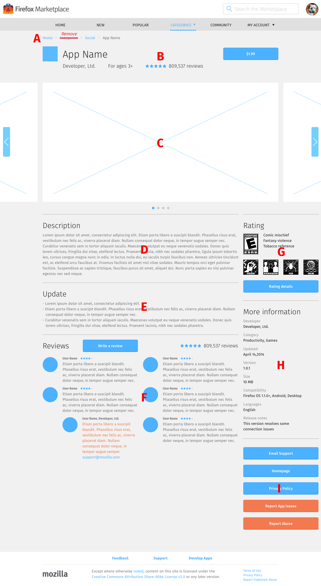

<div class="container">
	<div class="row">
		<div class="col-sm-12 col-md-12 col-lg-12">
			<h1>App Details &rarr; Page</h1>
			
			<ol class="longText letters">
  			<li>Navigation</li>
  			<li>App information, which contains:
  			  <ul>
  			    <li>Icon</li>
  			    <li>Name</li>
  			    <li>Developer name</li>
  			    <li>Short, one-sentence content ratings</li>
  			    <li>Average review star ratings</li>
  			    <li>Total number of reviews</li>
  			    <li>Price button</li>
  			  </ul>
  			</li>
  			<li>Screenshots<br/>
  			<span class="warning">There should be a rule as to how screenshots are arranged and displayed? Currently, it doesn’t exist.</span>
    			<ul>
    			  <li>Directional arrow appears when there are more screenshots than those that can fit inside the space. Use the arrow – or swipe – to navigate through the screenshot carousel.</li>
    			  <li>Every tap/click of the directional arrow scrolls to the next screenshot in queue.</li>
    			</ul>
  			</li>
  			<li>Description</li>
        <li>Updates<br/>
        Appears below description in all layouts.</li>
        <li>Reviews, which contains:
          <ul>
            <li><a href="app-details-review.html">Write a Review button</li>
            <li>Average review star ratings</li>
            <li>Total number of reviews</li>
            <li><a href="app-details-issue.html">Report App Issue</a> (not present on Desktop. <span class="warning">Could we design a layout where this button appear on Desktop, too?</span>)</li>
            <li>Individual review, which contains:
              <ul>
                <li>Username</li>
                <li>User star rating</li>
                <li>Review text</li>
              </ul>
            </li>
          </ul>
        </li>
        <li>Rating, which contains:
          <ul>
            <li>Ratings image</li>
            <li>Auxiliary descriptions</li>
            <li>Auxiliary images</li>
          </ul>
        <span class="warning">How can user see all review, and what does that page look like?</span>
        </li>
        <li>More information, which contains:
          <ul>
            <li>Developer name</li>
            <li>Category(s)</li>
            <li>Date of last update</li>
            <li>Version</li>
            <li>Compatibility</li>
            <li>Languages</li>
            <li>Release notes</li>
          </ul>
        </li>
        <li>Tools, which contains:
          <ul>
            <li>Email support</li>
            <li>Homepage</li>
            <li><a href="app-details-privacy.html">Privacy Policy</a></li>
            <li>Report Abuse (<span class="warning">There doesn’t seem to be a page for the Report Abuse page/interface. Is Abuse considered a part of Feedback? Can it be included there?</span>)</li>
        </li>
			</ol>
			  
		  <h3 class="specItem">Mobile</h3>
		  
		  
		  
      <ul class="longText">
        <li><strong>Navigation</strong><br/>
        Has a back arrow that leads to the previous page when selected.</li>
        <li><strong>Reviews</strong><br/>
        Contains 2 reviews.</li>
      </ul>
		  
		  <h3 class="specItem">Tablet</h3>
		  
		  
		  
      <ul class="longText">
        <li><strong>Navigation</strong><br/>
        Contains breadcrumb navigation links that leads to the parent pages when selected. Breadcrumb is always presented in this order:
      		<ol>
      		  <li><strong>Home:</strong> leads to <a href="home.html">Home – The Feed</a>.</li>
      		  <li><strong>Categories:</strong> there is no landing page for all categories, so this item should be removed from the breadcrumb.</li>
      		  <li><strong>Category name:</strong> leads to the <a href="categories.html">list view of apps in a specific category</a>.</li>
      		  <li><strong>App name</strong></li>
      		</ol>
        </li>
        <li><strong>Description</strong><br/>
        Appears below screenshots, on the left column</li>
        <li><strong>Reviews</strong><br/>
        Contains 4 reviews.</li>
      </ul>
      
      <h3 class="specItem">Desktop</h3>
      
		  
		  
      <ul class="longText">
        <li><strong>Navigation</strong><br/>
        Like the Tablet layout, contains breadcrumb navigation links that leads to the parent pages when selected. Breadcrumb has the same order as the Tablet layout.</li>
        <li><strong>Description</strong><br/>
        Appears below screenshots, on the left column</li>
        <li><strong>Reviews</strong><br/>
          <ul>
            <li>Contains 6 reviews, divided over 2 columns, with 3 reviews in each column</li>
            <li>Each review has an avatar</li>
            <li>Report App Issue is located under the Tools area. <span class="warning">Could we design a layout where this button appear on Desktop, too?</span></li>
          </ul>
        </li>
        <li><strong>Rating</strong><br/>
        Ratings image is located to the left of auxiliary descriptions. Auxiliary images are located below them.</li>
        <li><strong>Tools</strong><br/>
        As mentioned above, <a href="app-details-issue.html">Report App Issue</a> is located here.</li>
      </ul>

		</div>
	</div>
	<!-- Pagination. If you have more than one page, set the multipage variable in the Frontmatter to true. Editing the pagination code happens in /_includes/homePagination.html.
		NOTE: This is currently broken in the Jekyll ver of this template.
		-->
		{% if page.multipage %}
			{% include homePagination.html %}
		{% endif %}
